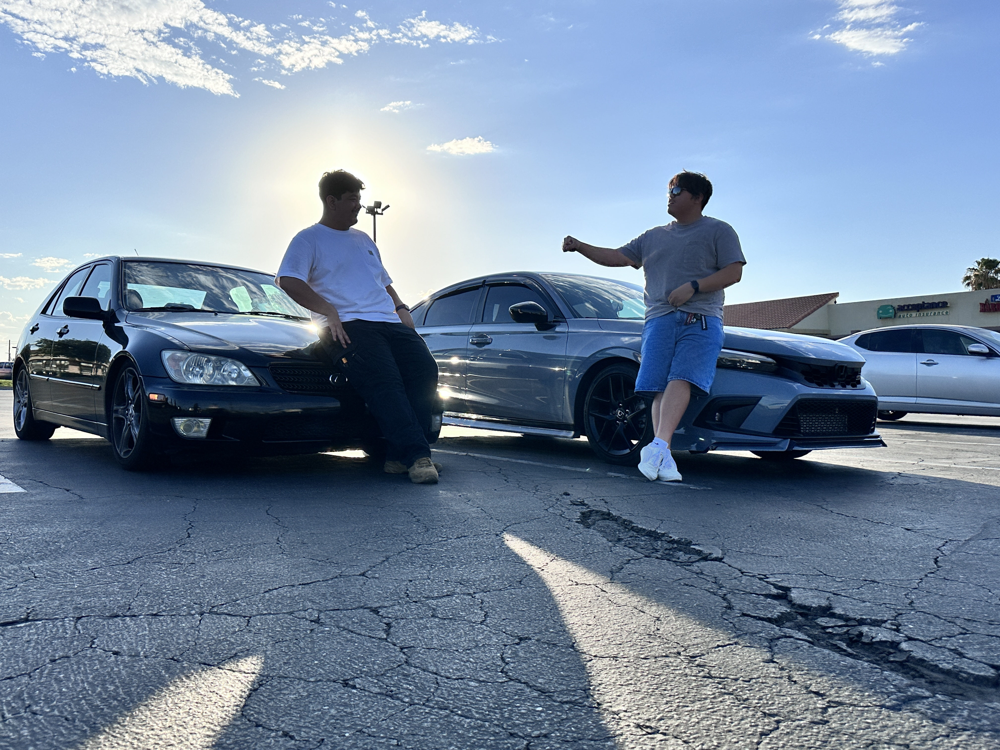
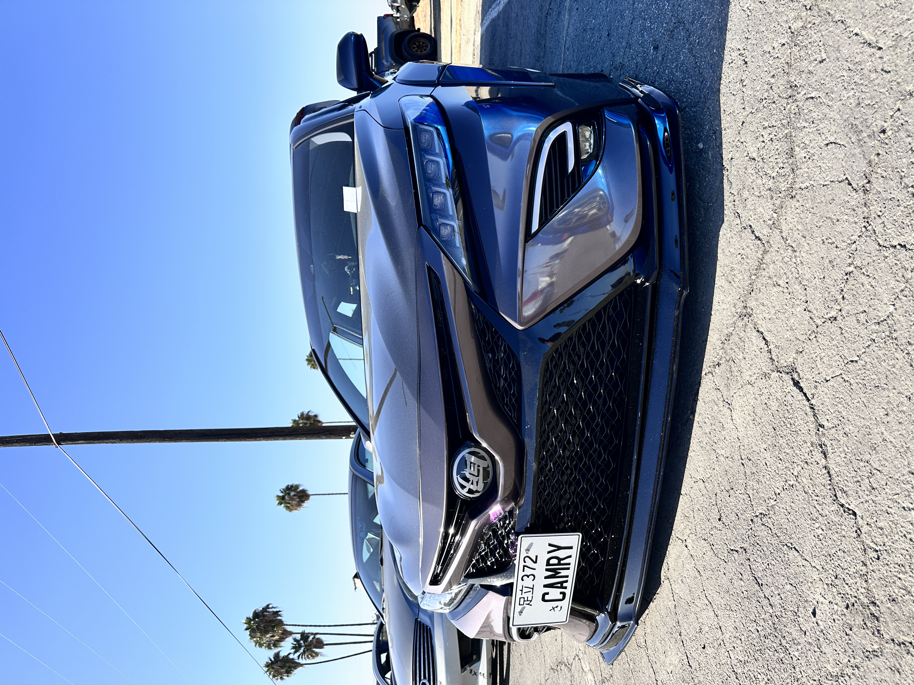
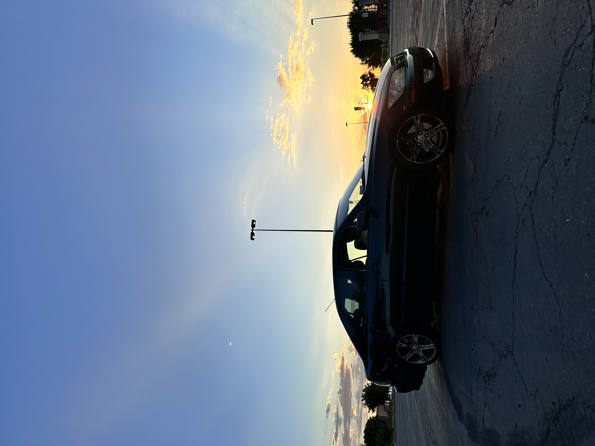
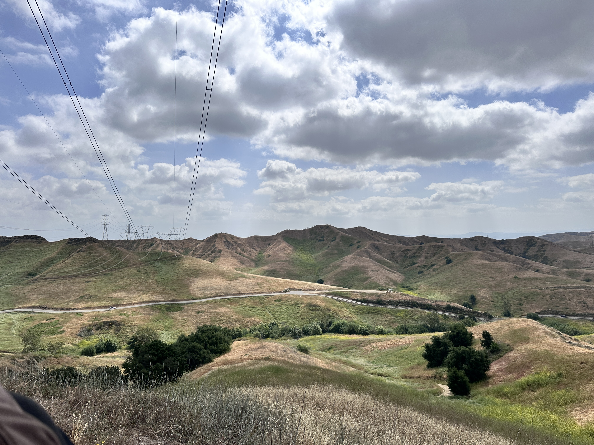
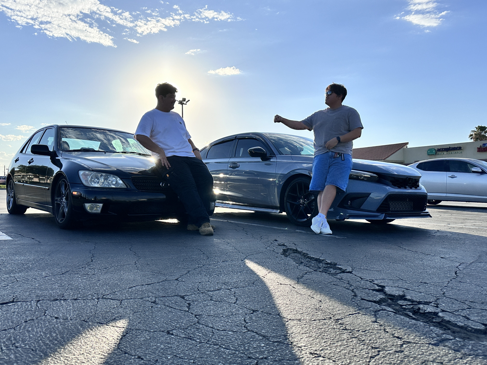
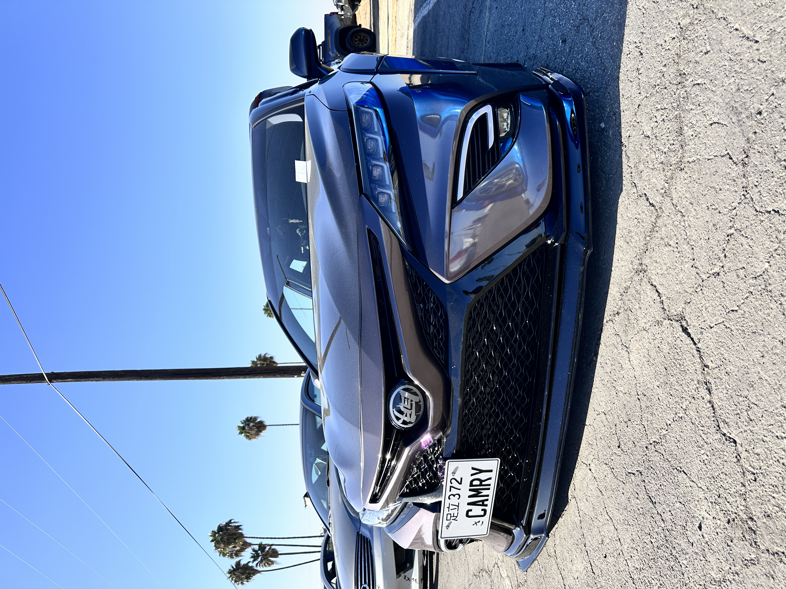
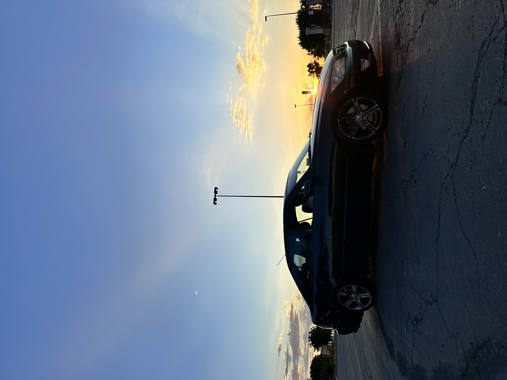
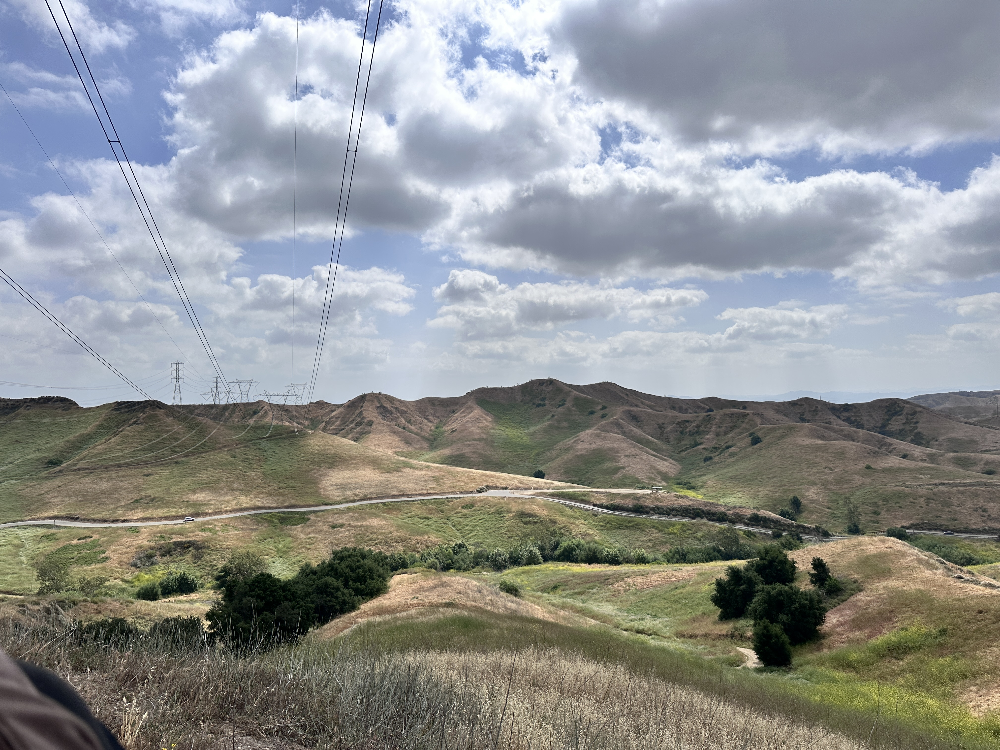
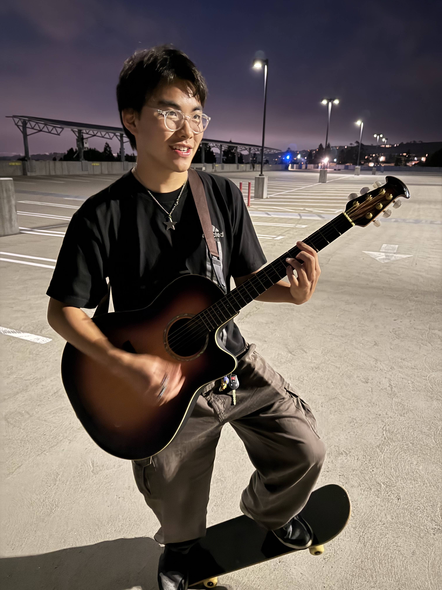
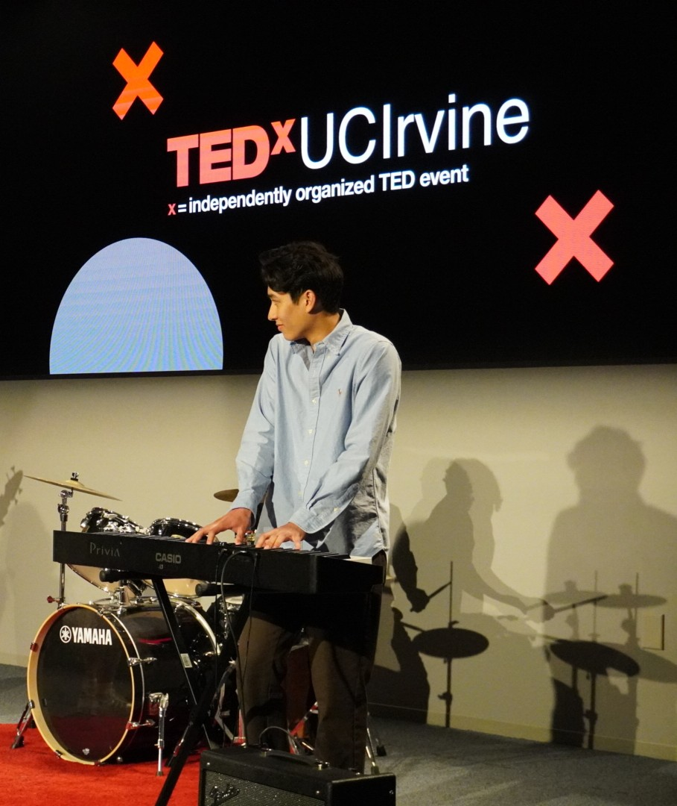

About Me
From programming applications for personal use to playing music for friends and my local college community, I utilize my skills and knowledge to enhance my way of living. Though I have strong confidence in my skills and execution of my plans, there are still certain aspects of my abilities that I feel the need to work on. Despite knowing my faults, I strive to grow and learn new concepts and ideas that will better my current capabilities. To highlight my strengths, please continue exploring my portfolio and form your own impression of me.
Projects
These are programmed-based projects that, for the most part, are primarily made for personal amusement and curiosity. Two are group projects, one utilizing Arduino and the other being Full-Stack based. The rest show my knowledge with Python, but I do have intermediate experience with C, C++, HTML, CSS, JavaScript, and a bit of Assembly.
CodeBytes | Full-Stack Group Project

This project was to show a possible website that can help users who aren’t familiar with programming in HTML or any other coding language be exposed to it with this language-teaching application called CodeBytes. Taking each step bit-by-bit! The project is currently not on going, but it was my first exposure to HTML and CSS, with most of my part of the project going into the UI/UX implementation (from design to code).
Kamay Guys | Grabbing-Robot utilizing Arduino

Kamay Guys is the name of the group that I was with when creating this rover that grabs blocks. The control of the rover was through bluetooth that is finger-based. The glove-controller has flexible resistors (flex-sensors) that provides bytes to the master and slave bluetooth modules that dictate the movement of the rover. My part of the project was implementing the flex-sensor implementation (from user-input to value).
Photos
The photos displayed below are editied, taken, or were instructed to be taken as the way they are by me. Most of the photos taken are from an iPhone 14 Pro Max, but a handful were taken with a Sony A7. Though these photos aren't the main aspect of this profolio, it's one of the many passions that I have outside of coding and I wanted to show my passion of the art form (with me controlling the leds). Click on any image to fullscreen and click on it again to exit out.

 








The Mix
Since Feburary 2025, my band and I have existed and played music for friends, student clubs, and student-ran events nearby UCI. We're a cover band (for now) and we try to learn any songs people reccommend to us. The genre that we primarily play is pop music, and we try our best to make our cover sound as close as it can with the current instrument that we have. With that being said here's the wonderful individuals that make up The Mix!
Hazel | Lead Singer
Utilizing her vocal skills from practicing between her acapella group and free time, Hazel sings in her own unique way that once you hear her voice you will know that it's her singing. Getting her inspiration from Michael Jackson and many other artists of the like, she pushes herself to sound great for any performance and occasion. Her drive to sound perfect is indescribable, but you'll hear her effort, experience, and technique in her singing.
Derick | Lead Guitarist
Having a musically inclined father, Derick has been exposed to music at a very young age, playing a variety of instruments. From the flute, to the guitar, to the easy percussion instruments anyone can play, Derick is multilingual between multiple instruments and if he really wanted to he could make a solo, indie album. Not only is he gifted in music, but he’s amenable with film and art. Having a major in film and utilizing his art skills to help him with that major (drawing out scenes, expressing how characters should feel, etc…) he utilizes all of his skills as much as he can. You could say he’s a jack of all trades.
Bianca | Bassist
Ever since high school, Bianca has been playing the bass with multiple different bands with widely different genres. From punk, to pop, all the way back to latin rock, Bianca can play the bass to any genre she’s exposed to. Outside of music, she does charitable acts for the need, volunteering at food shelters and providing it when possible. With everything that she does, she is truly a one of a kind person that has more special skills than most.
Marcos | Pianist
For awhile, Marcos has been playing the piano and has fundamentally understood the instrument so well that he can basically transfer his music skills to a new instrument and get to an intermediate level with the instrument in days. His improv, on the spot thinking has always filled the emptiness of our band, making it always feel whole when we play. Besides his skills in intuition and being able to pick up new skills on the fly, he’s also an aerospace engineer, highlighting (on occasion) how physics dictate sound, relating it back to music. Marcos is adds feeling to the music we play, so I’m thankful to have a person like him to be playing with me.
Kenneth | Drums
There's no self-righteous way to coat this. I’ve played many songs with this band, and pop music is notoriously known to have very easy drum rudiments. In comparison to others within the band, my job is to keep the tempo (non-existent with the way we play) and have everyone be on the same page (works most of the time). Overall, the effort that I need to insert into a song is not as much as everybody else since I don’t need to worry about notes, just the rhythm and rests throughout the song. Overall, I enjoy being the drummer since I’m able to play any song on a whim.